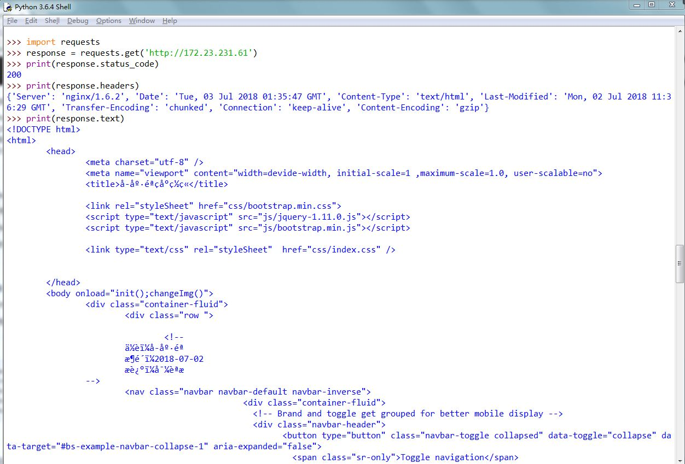

爬虫：请求网站并提取数据的自动化程序
request方法:get,post,head,put,delete,options
URL:统一资源定位符，用来确定一个特定资源所在的位置
请求头:包含请求的一些头部信息，User-Agent、Host、Cookies等
请求体:请求时额外附带的数据，例如提交的表单数据
响应状态:404找不到页面，200访问成功，301跳转，502服务器错误
响应头:如内容的类型，内容长度，服务器消息，设置Cookies等等
响应体:最主要的部分，包含了请求资源的内容，如网页的Http文件，图片等二进制数据
import requests #导入requsets库
response = requests.get('http://172.23.231.61') #利用get()方法向服务器发起请求
print(response.status_code) #打印请求的状态码
print(response.headers) #打印请求头信息
print(response.text) #打印请求体内容
